咋样？ @ Jun 15, 2009
活脱脱一个福尔摩斯侦探？
穿警服的小帅哥？
“象个环卫工人...”阿姨说。
呃。。。。。。
不管怎么样，花了98元量身定做的雨衣哦，自得一下自己用皮尺的技术，嘿嘿，分毫不差，穿在它身上正好。就是背上那个小蜜蜂的图案太弱。。。应该印个FBI或者骷髅头之类的。下雨吧，就象昨晚上那种雷电雨。。。出去跑一圈回来，这雨衣才值啊。话说昨天下午四点多钟洗完车，晚上就下雨，20块打水漂了。。。


活脱脱一个福尔摩斯侦探？
穿警服的小帅哥？
“象个环卫工人...”阿姨说。
呃。。。。。。
不管怎么样，花了98元量身定做的雨衣哦，自得一下自己用皮尺的技术，嘿嘿，分毫不差，穿在它身上正好。就是背上那个小蜜蜂的图案太弱。。。应该印个FBI或者骷髅头之类的。下雨吧，就象昨晚上那种雷电雨。。。出去跑一圈回来，这雨衣才值啊。话说昨天下午四点多钟洗完车，晚上就下雨，20块打水漂了。。。
今天混迹在SUBARU组织的CRC观摩团里，周转于不同赛场地点，那感觉就好象被太阳晒蔫、被灰尘掩埋、被酷热蒸发了。。。魔鬼训练营是不是就是这样的？不是组织的问题，是天气的问题。
据说看拉力赛第一次组织这样观摩的，一般都是自己清早起来找个视角好的地儿蹲点看赛车一辆一辆过，至于全程赛况，或许可以听听收音机了解点？用组织的话讲，头一次包大家吃好喝好，转移有车接车送...这种豪华观摩团。可是这种团里VIP用户少，据说南京只有10位。小报记者倒是一大堆，还有记者妈妈带着会走路的孩子一起来的，跟周末一日游似的。中午好吃好喝伺候着，吃完继续外面晒太阳，吃灰尘。要是我们的工作可以这样处理的话，晒点太阳吃点灰尘也可以啊：D
怪不得在SS9赛段观看时，把老农民气得半死，骂骂咧咧地说：“俺们6点就起来等了，你们一来把俺们的视线全给挡喽。。。”再一看人家带着凳子、水瓶、水杯、扇子、遮阳帽，妇女们花枝招展，穿戴整齐的，怪辛苦的。难得在居住地边上举办盛事，犹如给平静的湖面投下一颗小石子。。。。都给SUBARU的观摩团给搅了。
原来看拉力赛比看F1辛苦得多啊，赛车手没几个帅的，帅的那个林志颖一直脱离群众，压根看不到。所以今后看拉力赛坚决不去现场，要在电视机前看。
现场看CRC，等于一大群人集体吃灰。
后悔无数。。。。。。。。。
在SS9赛段合影，身后是沙石路面的赛道。
平时这个路上跑的都是红旋风，就是拉渣土的大卡车。
旁边戴小红帽的小孩是铁杆SUBARU迷，边看边说三菱的坏话。。。
不过能把三菱作为竞争对手，本身就是对三菱的一种承认。
要知道国际组第一名可是贵州百灵的一辆EVO赛车哦~

其实来自澳洲的赛车手这次翻车了，可能当时我们参观修车间时，他们正好在，受到了热捧。低头签名的是车手，合影的是领航员。 他们只有比赛期间才会来中国。

SUBARU亚太区新上任总裁“铃木一成”，替换了原先的大野圭。
大家都在吃灰的时候他也一起在吃灰，而且和我们一样站着晒太阳，不时拿出毛巾来擦汗。。。日本中年男人出门口袋里装着太太准备的手帕，对啊，这位铃木先生掏出的不是手帕，是一条好大的毛巾！换了国内的领导看比赛，准保有人准备好椅子和茶水，坐第一排，没准儿还弄个罩子给挡挡灰尘呢。
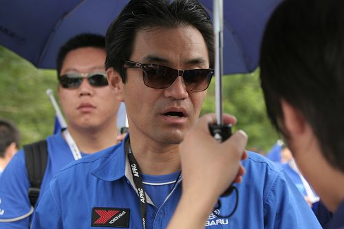
短发戴棒球帽就跟剪了辫子的清朝男人没两样，帽檐太低还得抬起脑袋来拍照，这下脸就更大了。

辛苦！都站在土石堆上张望，来一辆赛车欢呼一阵儿。
韩寒开的也是SUBARU的STI 。
获国际组中国车手第三名。

左边是领航员，右边是韩寒，气质老徐与韩寒。。。
还是应了那句俗语：一块馒头搭块糕？

开EVO的林志颖过去了。
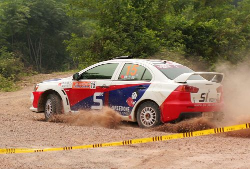
猜测这辆GMC是林志颖的保姆车。

李微以1小时14分52秒1的总成绩暂列全场第七、国内车手第三。
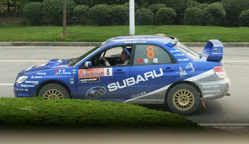
李微本站比赛使用了全新的斯巴鲁9代STI，也遭遇到了爆胎。说是撞到了一块石头，轮圈被割裂。

日本车手NONAKA的赛车，右驾。
据介绍这样的车手是自己花钱参加比赛的。
车内进行过改装，能拆的都拆了，里面加了固定的框架，看起来很简陋，但实质上是一匹猛虎。

国家组一汽大众庆洋高尔夫车队陈德安/路明夺冠，该队同时获得车队冠军。

右为赛车手陈德安，这是他首次获得09年揭幕战冠军。
装备齐全。
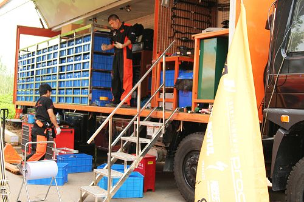
大牌避震。
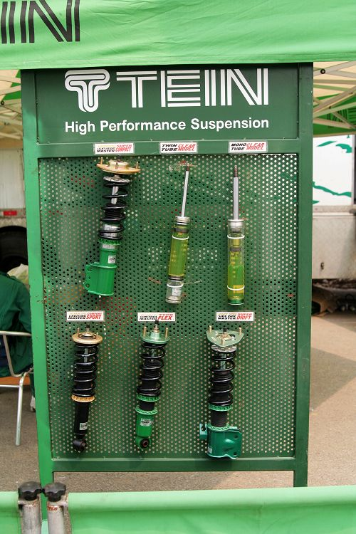
井然有序。
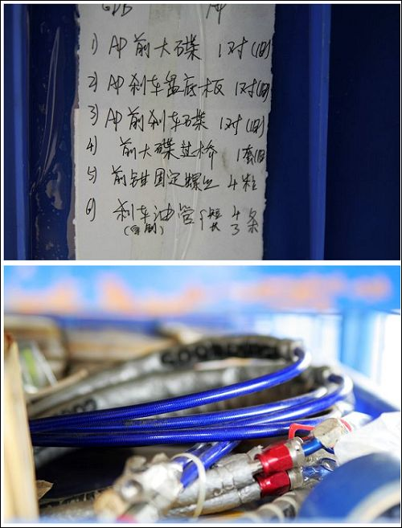
维修间的装备。

注意到这只工具箱很摆很酷，做工精致，不知道是不是国产货？

满面憔悴，脸上的斑都晒出来了。前一天晚上两点才睡，找衣服，要找的一件没找到，晕死。大脑兴奋一晚上。早晨6：30就起了...我不憔悴谁憔悴？
才初夏哎，皮肤已经被光照分割成深浅不同的区域了。
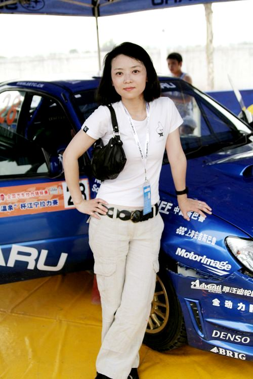
晚上朋友约了一起吃饭，本打算穿这件连体裤外出，最终还是作罢。
周五同事说“你的确胖了，身体都圆了....”
呃.....妈呀......
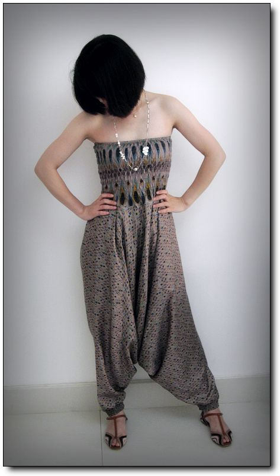
路边两只小小狗打着玩，其中一只回头看我时的表情，真是好开心好开心的呢；

看报纸的杂货铺老板；

看车的收费员与走过的美女；
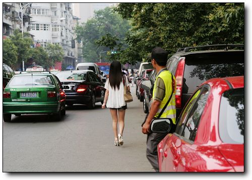
南京特产盐水鸭，这样的小店遍布南京的大街小巷；
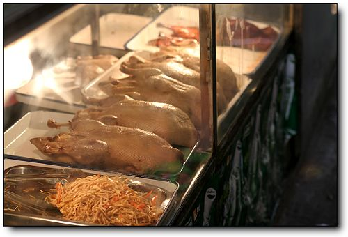
最终穿了宽松的连衣裙出门，到了朋友居住的小区；
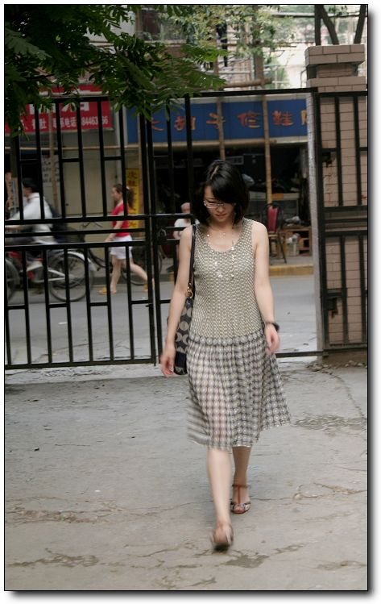
她家的电视新闻上报道：江苏第一例甲型H1N1流感在南通出现，是从日本出差回国的某公司总经理，其留学日本的侄子传染给他的。南京也快了吧？只要出现一例，估计大街上就能见着不少戴口罩的。
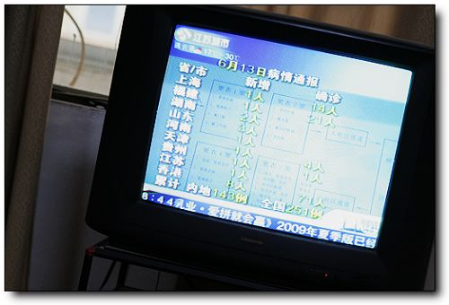
包围曝光降低两格后拍下的灯具，是不是有那么些鬼魅的气质？

自从剪了短发后便没有拍过清晰大头照，这次拍了许多；
又一张，脸无可奈何地圆啊圆啊，什么时候是尽头？

红枣莲子；

尖椒青豆荚；

黑鱼做的沸腾鱼。那么有弹性的鱼肉，一定不能煮的？是不是用滚开的油浇上去熟的呢？

最爱的谗嘴蛙。与别家饭店不同的是，里面的牛蛙都是整只整只的大牛蛙，很过瘾；
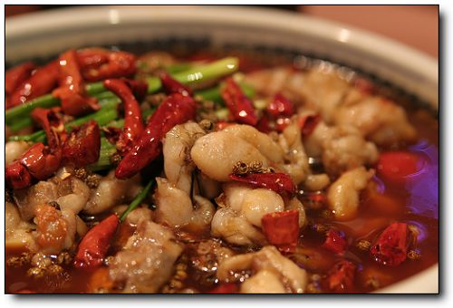
能有人把我拍的这么清楚，真不容易；
沸腾鱼乡停业一段时间后重新开业，搬到原先同层楼对面的房间，店面小了许多，菜单也简陋到一张纸.....谗嘴蛙比过去要稍微咸一些；
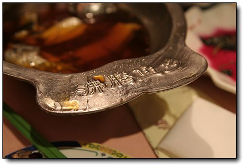
吃到人去楼空，其实是聊到人去楼空；

开瑜珈馆的MM，性格很好的女孩子。
发现周围的女性朋友多是美女啊，最主要是气质都不错。
有本心理杂志上说能和美女做朋友的同性心理健康，抗击打能力强，性格好。

缩小后的照片失去了细节的美，有好几张我自己看了都惊讶，可能是灯光太照顾我的相机了；

镜子里的她；

红到心窝里去了。
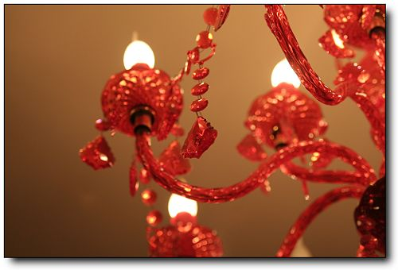
等待下雨，好让雨水冲刷掉车身上的泥点。
从晚上等到早晨，还要等到午后？
午饭吃完满脸是汗，还有半天的工作便可暂且轻松。
周末有我满心等待的活动，喜悦。
**********************DRESS BLOG*******************
这周工作比较忙，偏休闲搭配多，今天集中上传了。
忘记星期一穿了什么......
尤其喜欢昨天的长体恤+7分牛仔裤+平底鞋，以后补拍。
@星期二

@星期三

@星期五
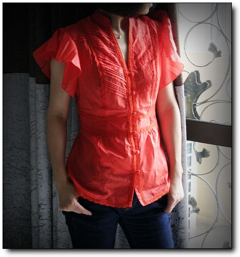
经济专家说通货膨胀已经来了。大家存在银行的钱眼见着缩水，很多人把买房子当成储蓄保值的手段，闻听近期楼市回暖，是买房子好时机，周围人蠢蠢欲动的多起来。可是郎咸平说：“未来2-10年中国99%的白领以及他们的家庭即将面临破产。而且是必然破产！无路可逃！那么还买房子干嘛？”
10年一遇的经济危机中，中国似乎被排除在外，饭店里宾客满堂，商场里人潮涌动，可以看到，商品价格下跌，工资没有上涨，既然物品价格没有上涨，何来通货膨胀？金融市场是实体经济的晴雨表，但不适用于中国。主要因为A股市值大部分都是大型国企和银行，而这些与政策相关、由行政主导的行业并不能代表一个国家经济的真正情况。那么政府一定会不惜一切手段控制通货膨胀。
事实上通胀未必是坏事，固然大家的存款缩水，但通胀往往也是伴随着工资收入的提高，试想工资上涨，个人存款未减少，还有能力支付房贷，拉动内需。政府强行控制通货膨胀带来的必然是通缩，有人说“通缩意味着收入和支出的减少，必须不断节衣缩食，是个痛苦的过程。”

看到和菜头为《梦的1/4旅行》写的书评，有意思，留言更有意思。对不起，我只看完了书中陈问问和项斯微的作品，尤其喜欢陈问问那篇《遇上更小的我》，项斯微有些文字比较适合我们这样的上班族看看，圆脸的她应该是开朗而可爱的女生吧？
除了沈大成的BLOG没看过之外（找时间要看看的），其余三个人的BLOG均拜读过，荞麦的博客看过一小段时间，渐渐便淡了，就象和菜头书评中所写“文章太过精巧，技术太娴熟，反而少了一点浑然天成的感觉。”目前天天看的是陈问问和项斯微的博客。看来无论书读得多寡都一样不喜欢看人耍技巧，无论是文字里还是现实生活中。
听横戈说和菜头为《城客》在写专栏，同时也为BLOGBUS写的项斯微居然使用的是酷歪的BLOG，不多说了，转载一下和菜头的书评：
周六晚上柏邦妮大宴宾客，我也骗得一席。据说柏老师一早就出去菜市场抢海鲜，回来的路上坐“蹦蹦”在大雨中逆行，命悬一线，好不惊险。在北京饭局很多，但是家宴却很少。在柏邦妮之前，一毛老师多次请我品尝他亲手做的牛肉面和阿一鲍鱼，已经达到了职业水准。另外一次是庄羽，去年中秋的时候，两口子邀请我去他们家过节，说是怕我在北京会觉得孤单。
柏老师在饭前送了我一本书，让我拿回去看看。说是一位朋友托她转交给我，但是我死活记不住那人的名字。我只记得那晚我们吃的是酸汤火锅，涮了一条鳜鱼，两斤竹节虾，三斤贝壳，十多个扇贝，两斤羊肉，外带一份糖醋排骨和烟熏猪耳朵。当然，还有许多青菜，但是我同样记不得它们的名字。因为是吃火锅，我半个小时就觉得很饱了。而当时我并不知道，柏老师她们还会继续战斗两个小时。所以，我盘踞在一张很舒服的沙发上，翻完了她给我的这本《梦的1/4旅行》。
为什么叫《梦的1/4旅行》而不是《梦的0.25旅行》？原因大概是有四位女作者，这本书是她们的合集。封二印了她们的Blog，其中居然有三个是BlogBus的用户（小资密集区啊）
我个人觉得，她们一人出一本书可能更为合适。现在这个样子，书有345页，实在是太厚了。中间点缀了许多可爱的漫画，但是在这样严肃的厚度之下，根本觉察不出这本书的内容有多轻盈。而且，四个人的文章密密麻麻地放在其中，篇幅短小，又没有足够的插画，让人读得很累，我到最后几乎已经完全陷进了沙发。
它本来是4个女孩子讲故事，有点像大家比拼谁写得更《小王子》那样的文章大会。最合适做成独立的小开本口袋书，然后配上大幅的插画，就可以让读者拿着它们在地铁上梦游，在枕边一起周末。而345页的一大本书拿出来，怎样的梦都吓醒了。
既然是合集，不可避免的要论一下高低。沈大成写的《从前有个人》系列，我个人非常不喜欢。她写了一堆想象中的国家和国民，但又映射现实，就变成了寓言那样的东西。一篇两篇尚可，通篇都是那样的短文字，阿拉实在是吃勿消。以文采而论，她是四个人里最弱的一个。无论是遣词造句，还是叙述结构，她真做到了“简单”二字。不是简约或者天真的那种简单，而真是简单。在风格上，她又模仿香港报刊的专栏。看着上世纪流行的寓言故事，又配上港式专栏风格，我觉得时空很是错乱，看完了之后不知道应该怎么表情。
荞麦的《走路去麦田》基本上围绕一个叫栗子的女孩在讲。27岁的经济适用女，生活在大都市，对生活有些感悟，不长的人生里有些小故事。荞麦可能是这四个人里笔力最强的人，文章结构都很精巧，文字也精准锋利，情绪的微妙处把握准确，应该会有许多人喜欢。我很希望她能出一本关于栗子的书，选择生活或者情感上的几十个侧面、瞬间。以她的文字能力，应该可以把这个女孩子表现得非常生动具体，能打动许多人，觉得自己就是那个栗子。不过，我个人把荞麦放在第二位。原因是她的文章太过精巧，技术太娴熟，反而少了一点浑然天成的感觉。梦也好，情感也罢，应该混沌一些。
我个人最喜欢陈问问写的《遇上更小的我》。以技术而论，以工整而论，她比不上荞麦。但是，她是这四个人里唯一一个真在做梦的人。看她写的小故事，初看很笨拙，大概写得也慢，但是几乎每一篇都能打中你心底里的什么情绪。往往看完一篇，心里就蓦地翻滚一次。她和笔下的所有人物和故事都保持了相当的距离，几乎不使用心理描写、旁白，而是用最简单的字句去讲好一个故事，从头到尾都是叙述性的文字，但是这个故事却很动人。四个人里，真正有《小王子》那种对生活的洞彻但是又不失悲悯之心的，只有陈问问。她在技巧之上，所以我最欣赏她。
项斯微，《吃掉所有黑暗》，这是一系列植入式广告软文。我个人很不理解，为什么她会出现在这本文集里？如果想读类似的文章，女性杂志上大把，也一样充斥着各种品牌名，外带各种英文店名，结果连一个故事都讲不全。讲故事就是讲故事，玩魔术就是玩魔术，靠障眼法写故事不成，没人有耐心看下去。
本书28元，除4得7，它起码值14块。
来自豆瓣————
***“项斯微”小组
***《我更喜欢的是她的方式》
昨天晚上梦见一条蟒蛇，不是普通的蛇，是蟒蛇。
我和一群人在它到来之前想办法建起护栏...
可笑的是护栏非常矮，只到我膝盖位置。
两节恍恍悠悠的白色护栏，用绳索扎在一起，我家Luke也在帮忙。
可是总也弄不好。
而蟒蛇已经到了这座平房的外屋...
我让一个同事把所有斧子都找出来。
结果都是非常迷你的斧头？！
我又找来长短不一的螺丝批塞进裤子口袋。
心里琢磨着要是蟒蛇进来我就用螺丝批扎它的嘴巴....
这时候....恐惧让我在黑暗中惊醒。
清醒的白天我在想我有那么勇敢吗？

剥辣椒籽之后，双手象被火烫过一样，手指挠过的左面颊也是，朝镜子里一看红红的一片。真是特别烫、特别热、特别辣....让人不能忽视的感觉，暗自庆幸没用手挠眼睛。用冷水冲，洗手液洗，似乎稍微好一些，可是洗澡之后双手再一次剧烈的灼烧起来，不知道是怎么睡着的？这种红辣椒特别小，还没有我的手指长，却能折腾你到翻天覆地！
昨天去菜场买菜的路上遇到下面这个车队，红色是LINGLONG女子车队的车，前面拖车上是8代和9代的STI。有点小激动，本应该直行的，见一行车队从眼前开过，立刻打右转跟在车队后面拍了几张照片，搞得跟狗仔队似的。前面红色车是用三菱LANCER改装的，开在路上的声音跟飞机起飞的噪音差不多分贝，那是一种低沉的噪音。怪不得最近在路上总能遇到光鲜亮丽的改装车，原来全国汽车拉力赛（CRC）首站将于6月12-14日在南京江宁区举行，从车手报名情况看，包括韩寒、林志颖、刘斌、短道速滑名将杨阳等诸多明星将参赛。
南京有个车手参加，据说是做手机生意的。这种车手资格证书自己可以花钱去北京培训，整个培训费用为6000 元，包括执照费、训练费以及一套连体赛车服和一双赛车鞋。此外，车队还会安排专车接送学员往返于市区和训练场。接着考一本D级赛车驾，然后改装一辆赛车，参加一次比赛，如果有厂商看中你，你就可以成为一名真正的赛车手。
前些时候杭州开EVO撞死阳光青年的那小子，从小也是开卡丁车的，据说“一般20岁左右没人看中你的话，基本没什么希望做一名出色职业赛车手了，当然这是针对极速赛车而言的。而不是那种需要丰富经验的沙漠越野拉力赛的车手。”不知道这样的说法是否正确？
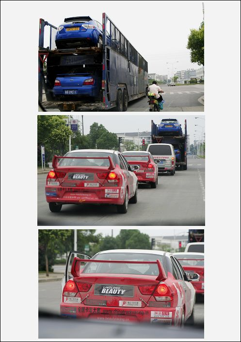
前一日见文怡教人做懒汉饭，第二日见蚊子象模象样地做了一份，第三日我也做象模象样做了这份“土豆饭”，我打算日后将土豆换成蔬菜粒（包含玉米、胡萝卜和青豆）试试。
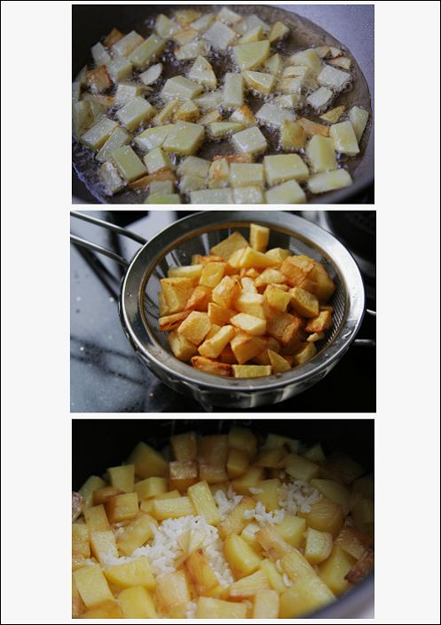
这是带它去洗澡，然后再次剪短它耳朵上的毛，希望散步时耳朵不要拖在地上扫灰尘。牺牲点形象，换来好的卫生，值得。
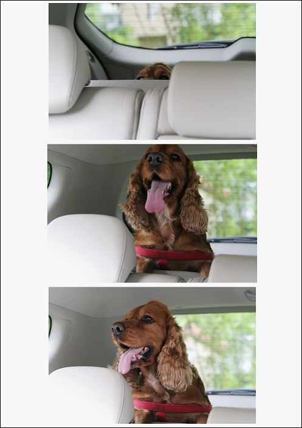
周六早晨钟点工阿姨发来短信：在你家门口放了一把花，给你的。
我打开门一看，一个小塑料袋里装了一把栀子花，心里一暖。
赶紧找了玻璃器皿放上水将这些花插在里面，摆放在卧室的窗台上。
夜晚整个卧室分外清香，今天连客厅都香了。

是狗疯了还是人疯了？
比畜生还不如！！！
2009年5月31日，陕西洋县在全县3206平方公里范围内进行了一场无差别的大屠杀——屠杀对象是狗！该县无论是否领取了准养证、是否注射了疫苗、是否栓、圈养，都将于5月31日被处以极刑。
洋县是在黑龙江黑河市想成为无狗县的失败后，率先成了全国第一个无犬县。
（综合网上来自洋县用户的信息）

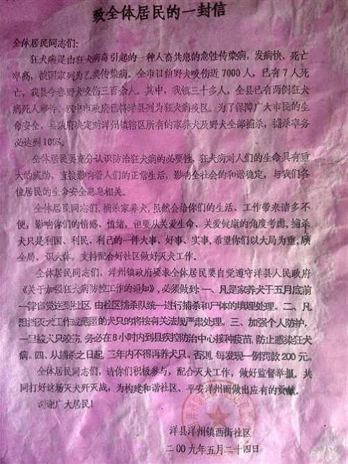
以下来自黑麦的BLOG
一、汉中市区：
1、亲眼见打狗队，据当地市民反映打狗事件不断发生。
2、具体事件如：一名老太太带狗在市场买菜，狗放在车篮内，品种为小型京吧，打狗队趁老太太不注意，抱出来就乱棍打死。菜市场人数众多，老太太精神几乎崩溃，当场很多人也无法接受，当场也吓哭了不少小孩。
二、汉中洋县：（至2009年5月29日已捕杀2万多只）
下达命令部门—当地政府
执行部门---武警、社会闲杂人等（统一服装）
捕杀范围：所有犬只，不论大小，品种，是否有主犬
方式：
1、首先是以注射疫苗为名，诱骗公众填表，获取养犬户的详细资料，名为免费注射疫苗及办理养犬证资料登记；
2、事实为，登记之后直接上门捕杀犬只，采取方式为：棍棒打死；
现实情况：洋县当地犬只已全部捕杀完毕，送走犬只强令要求2日内送回并交由处置，每户交纳100元尸体处理费及罚款；
3、处理方式：洋县当地运输—农用运输车，每日平均2-3车犬只尸体，掩埋处理
实施部门—当地防疫站；
4、最新资料：2009年5月30日18：30分
2009年5月30日黄金侠镇（离洋县40多公里）：当日捕杀840余只
2009年5月31日及6月1日将捕杀完毕洋县辖区内所有犬只，争做“全国第一无狗县”！
5、具体事件如：一金毛在家中，无外出，打狗队根据前期登记的资料，上门捕杀。狗主出示犬只证件及疫苗证书，跪地相求，但是打狗队仍然执意执行，乱棍打死。狗主无奈，眼看求助无门，只能转而跪向自家犬只，流着眼泪说无法保护它，只能让它接受这残酷的事实，亲眼看见自家犬只在乱棍下死亡。狗主精神几乎崩溃。